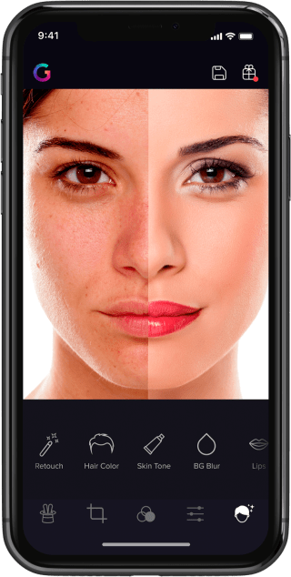
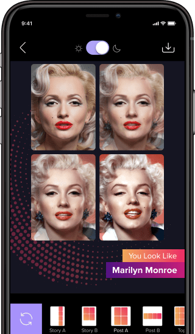

年会大合影被我用这个手机App改完，同事追着要链接
年终聚餐的大合照怎么修都不对，直到同事掏出这个工具，五分钟磨皮调色一气呵成，还顺便玩起了AI名人相似测试。
周五晚上部门年会散场已经十点多，手机相册里躺着二十多张大合影。每年这个时候都是社交平台的「修图军备竞赛」——谁先发、谁发的好看、谁修的不夸张，全看那一两小时里谁的手速和审美在线。
我正对着一张合照发愁呢，脸是亮了但脖子偏黄，整体像从两个灯下面拍的。旁边的小周凑过来：「你这还在用系统自带的修图？试试 Gradient官网 这个应用啊，我上周装的，修人像一绝。」
从装不上到用起来：踩了两个坑
说实话我一开始是拒绝的，手机里已经有三个修图工具了。但架不住小周直接把她手机屏幕怼到我眼前——同样一张合照，她用 Gradient 磨了皮调了肤色，皮肤干净但还能看见一点颗粒感，发际线和眉毛边缘也没糊，明显比我那套「一键美化」自然。
于是去 gradient下载 拿了安装包，结果点 APK 文件的时候直接弹了「解析包出现问题」。
没遇见过这种情况，第一反应是手机坏了？赶紧翻手机找原因，后来才知道是下载的时候中断过一次，文件没下完整。删掉重新下，包大小大概两百多 MB，这次老老实实等它下完。
装完之后又卡了一下——旧版本残留。之前好像装过一个试用版没卸干净，新装跟旧的冲突。进系统设置把同包名的旧应用卸掉，再装新的就顺了。所以现在记住了：解析包报错先重下，提示应用未安装先卸旧版，两个最常见的安装坑。
磨皮调色：顺序对了才不发灰
打开 Gradient 才发现，它把人像精修拆成了好几个独立模块。我最急需解决的就是那张年会大合影，于是直奔磨皮和肤色调整。
以前我以为磨皮就是一键的事儿，结果它把磨皮和肤色分成了两个独立操作——磨皮管皮肤质感，肤色管颜色。去 gradient文档 翻了一下，说先磨后调，反过来容易把颜色修进纹理里。我按着这个顺序来：先用磨皮工具，力度选了中档偏下，保留了一点皮肤本身的颗粒感，没搞成那种连毛孔都看不见的「水磨蛋」；然后调肤色，主要做了三件事——整体提了一点亮度去暗沉、拉了一下去黄的滑块（年会灯光偏暖，脸普遍黄了一度）、最后用统一色温把脸和脖子的色温差给弥合了。
这个色温统一的细节让我印象深刻。之前用别的工具只调脸不调脖子，修完之后头白脖子黄一眼假。但 Gradient 让我以脖子的颜色为基准把脸修过去，结果出来头身色调一致，看起来特别自然。

最后检查了一遍边缘区域——发际线、眉毛、耳朵轮廓，没被磨糊，放大看还有细节。这就是我想要的「修干净但不发灰」。
修完图还不够：顺便玩了 AI 测试
合照发完朋友圈，小周又拉我玩它的 AI 相似功能。
这个挺有意思的，它有一个「你长得像谁」的测试——上传自己的照片，AI 会在结果页把你和几个名人做四格对照。结果页底部可以切版式：方形适合发朋友圈和小红书，长条适合发 Instagram 故事或者抖音这类竖屏平台。
我本来想直接长按结果图保存，结果小周提醒我：「一定要点结果页右上角的保存按钮！直接退出结果图就没了，得重新跑一遍。」
这个细节挺坑的。测试结果在预览页看着是存在的，但实际上没落盘，必须主动点保存。我第一次就差点犯这个错，还好被提醒了。
保存之后去相册里找，部分手机会把应用保存的图放进单独的「应用图库」分类里，直接在「最近」里翻不一定能看到。我在「其他相册」里找到了，确认没问题才放心。

顺手提一句订阅
玩到这里我注意到有些高级功能需要订阅才能用，叫 Unlimited 计划。免费版也能磨皮调色，但强度选项少一些，AI 测试的次数也有限制。
想试试高级功能的话可以开订阅，但有一件事必须提前记住：删掉应用不等于取消订阅。订阅是绑在 Google Play 或 App Store 账号上的，删应用只是删了个客户端，扣费还会继续。
安卓用户取消要去 Google Play 商店，确认右上角账号就是你买订阅的那个——多账号的人特别容易在这里踩坑——然后头像 → 付款与订阅 → 订阅 → 找到 Gradient 点取消。iOS 用户走系统设置，点顶部你的名字 → 订阅。
取消之后当期还能用，到已付费周期结束前功能都在。唯一要赶的就是到期前二十四小时这条线，官方条款写到期前二十四小时内会扣下一期，所以取消动作得赶在这之前。
发圈之后
那天晚上发了三条朋友圈：修完的大合影、AI 相似测试的四格图、还有一张我给旁边同事也修了半张脸的对比图。
评论区基本都在问「用什么修的」，小周已经成了团队里的 Gradient 野生代言人，挨个回复链接。其实我想说，真正好用的不是某个功能有多强，而是它能把修人像这件事拆得足够细，让我这种对修图没研究的人也能靠顺序和细节把活干好。
毕竟年会合照这种东西，每年就那几张，修得自然比修得狠重要。顺带提一句，这套玩法心得我也整理了一份，在 GitHub、Gitee 和 GitCode 都能看到，开源友好，随时同步最新内容。